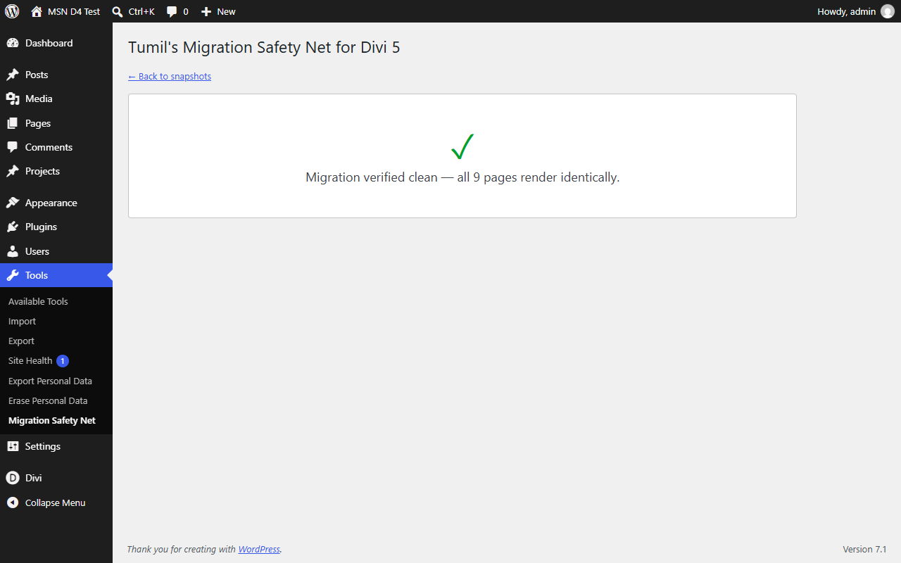
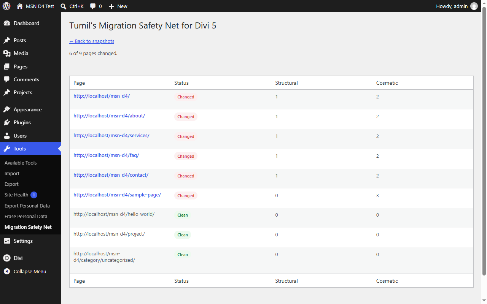
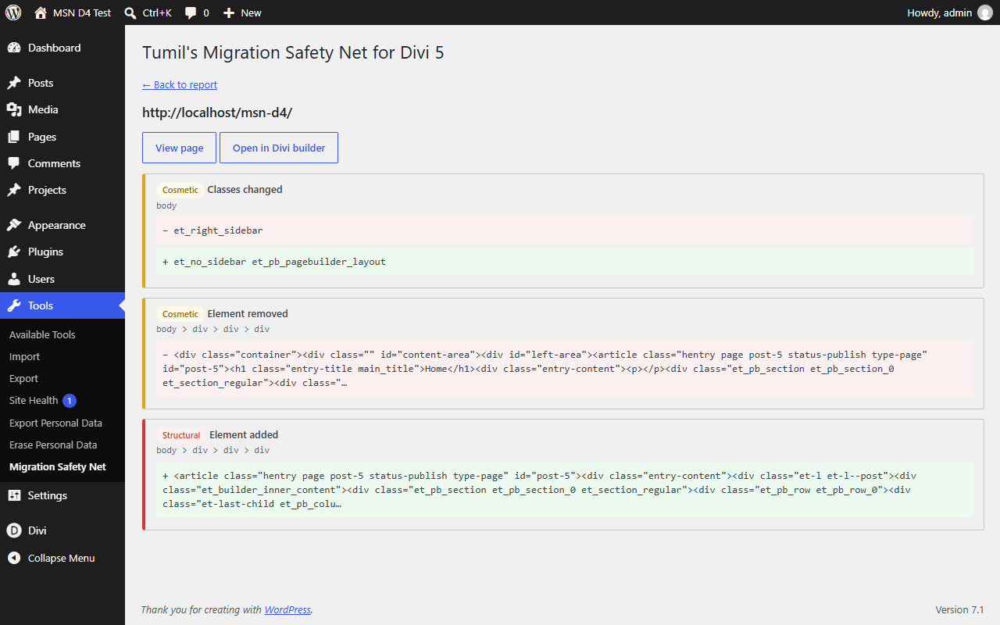
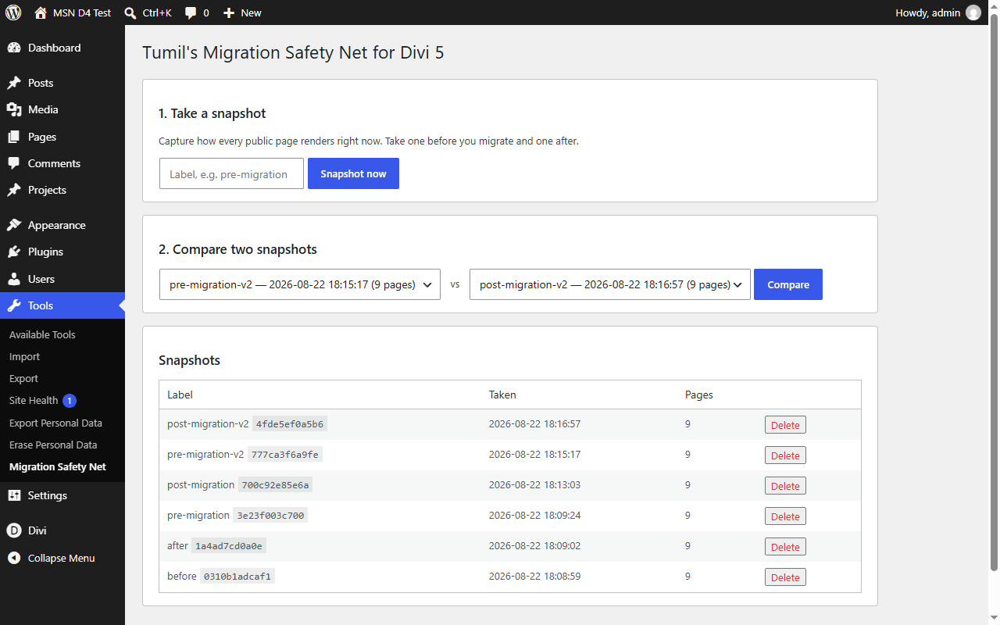

Snapshot every page before you migrate. Re-scan after. See exactly what changed — or prove nothing did.
Four steps, entirely inside your WordPress admin. No account, no external service, nothing to configure.
Capture how every published page actually renders, before you touch anything.
Run Divi’s migrator, update the theme, change whatever you meant to change.
Take a second snapshot of the same pages.
A noise-filtered DOM diff of every page, ranked by severity.
These are unretouched screenshots from a real Divi 4.27 → 5.2 migration of a nine-page site — not mockups. Click through the four screens the plugin actually produces.

A clean result is a first-class outcome. When every page still renders identically, you get a plain statement of it — the answer you actually wanted.

Changed pages sort to the top, split into structural and cosmetic counts. Clean pages are listed too, so you can see the whole site was checked.

Every change on a page, classified and labelled, with the before and after markup side by side so you can judge it in seconds.

Label a snapshot, take it, compare any two. Snapshots stay on your own server and can be deleted from this screen at any time.
Divi 5 rewrites a great deal of markup that changes nothing visually. Every one of those patterns is normalised away before comparison:
Each rule was forced by a real migration, never guessed at, and the whole engine ships with 102 automated tests. False positives are what make a verification tool worthless, so that is where the work went.
This measures rendered HTML, not painted pixels.
<style> block, say — is invisible to a markup diff.Said plainly here because a verification tool that overstates its coverage is worse than no tool at all.
Built for ordinary shared hosting. Page capture uses WordPress’s own loopback request — no headless browser, no API key, nothing about your site leaves your server.